|
|
|
|
|
|
Генель
В. Рождение новой змеи. 15 стр. В
поисках неизвестного
«Это своего
рода пространственный танграм»,- сказал Эрне
Рубик о своей «волшебной змее». И допустил неточность. Танграм - игра из
различной формы фрагментов некоего целого, например
квадрата. «Змея» же вся состоит из одинаковых деталей - треугольных призм
(рис. 1). В чём тут секрет? Почему призмы так точно укладываются друг к другу,
образуя совершенные формы, почему квадратные грани концевых призм идеально,
без перекосов, совпадают при любых извивах «змеи»? Ответ на этот вопрос
проливает свет и на другой: почему головоломка - «змея» существует в
единственном варианте? В мире запатентованы сотни, выпущены десятки головоломок -
аналогов венгерского кубика, все возможные многогранники рассечены всеми
мыслимыми плоскостями. А «змея» - одна... Хотя не совсем, есть еще
кубик-«змея», малоизвестная головоломка, сворачивающаяся в однообразные
прямоугольные структуры. Но именно она даёт ответы на все вопросы. «Змея»
Рубика - та же цепочка кубиков, только рассеченных пополам по диагонали. Играя
с ней, мы, сами того не замечая, играем в кубики. Просто яркий признак кубиков
- квадратные грани - умело скрыт от наших глаз, а выставлены
прямоугольники-сечения и половинки квадратов - прямоугольные треугольники. Так почему же в «змеином» мире нет разнообразия? Почему фантазия
не идёт дальше варьирования раскраски и размеров? Причины здесь глубже, чем ограниченность
конструкторской мысли, - причины,
видимо, в структуре нашего пространства. Простые детские кубики несут в себе очень
важную идею: они точно укладываются друг к другу, потому что являются
простейшей пространственной мозаикой. Вот и названо ключевое слово разгадки - мозаика, то есть структура, построенная
из фигур, плотно уложенных друг к другу, без зазоров. Теперь ясно, почему
нельзя брать любые многогранники и соединять их в цепочку, лишь бы совпали
грани. Нельзя даже менять пропорции и углы у известных «змеиных» кирпичиков-кубиков
и призм. Такие попытки были, некоторые идеи подобного рода даже опубликованы,
но явно без экспериментальной проверки. Ведь, будучи реализованы, эти
змееподобные монстры демонстрируют полную неспособность образовывать
структуры. Они свиваются в аморфные клубки с несовпадающими гранями. 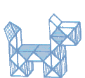 Рис 1. «Змея» Рубика. Казалось
бы, путь построения новых игр ясен - берём элементы любой другой
пространственной мозаики, соединяем их - и готово, есть новая головоломка.
Однако есть ещё одно «но». Элементы должны не просто складываться в мозаику, но
и иметь возможность поворачиваться, при этом опять
укладываясь в ту же мозаичную структуру. Кубики или их половинки умеют это, а,
например, кирпичи (прямоугольные параллелепипеды), тоже дающие мозаику, нет.
Значит, нужна не любая, а правильная геометрическая мозаика, элементы которой
могут быть повернуты и при этом самосовместятся гранями. Иначе говоря, на роль
элементов новой «змеи» могут претендовать центральносимметричные многогранники
с гранями в виде правильных многоугольников, другими словами - платоновы тела
или их комбинации и усечения (рис. 2). Вместе с тем известно, что мозаики
образуют только кубы или усечённые октаэдры, что не приносит ничего нового. 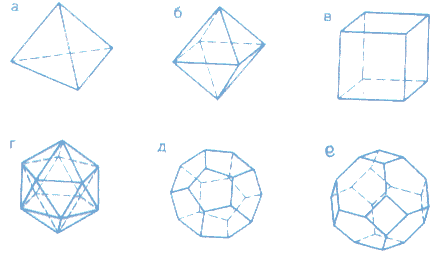 Рис.2. Правильные многогранники и усечнный октаэдр: а – тетраэдр; б – октаэдр; в- куб; г – икосаэдр; д – додекаэдр; е
- усечённый октаэдр. Рис. 3. Устройство «змейки» Генеля. Неужели тупик? Неужели богатое семейство многогранников не может
предложить ничего нового, более интересного, чем древние, как мир, кубики?
Стоп! Почему бы не допустить, что элементы цепочки могут быть разными. И тогда
сразу обнаруживается пара многогранников, удовлетворяющая всем условиям. И не
просто многогранников, а именно платоновых
тел. Октаэдры и тетраэдры, перемежаясь, заполняют
пространство без промежутков, самосовмещаются при поворотах, но цепочка из них
получается какая-то невыразительная (все грани - треугольники), а главное -
никак не удается свернуть её без пустот. Что-то мешает, нет гармонии. Всё
правильно, ведь плотности распределения тетраэдров и октаэдров в пространстве
соотносятся как 2:1. На два тетраэдра приходится один октаэдр, а в цепочке их
поровну. Другими словами, если достаточно большое пространство заполнить
тетраэдрами и октаэдрами и сосчитать количество тех и других, то тетраэдров
окажется вдвое больше, чем октаэдров. Это легко понять, если вспомнить, что у
тетраэдра четыре грани, а у октаэдра - восемь. Поэтому тетраэдр имеет четыре
соседа, а октаэдр - восемь. В «змейке» у каждого элемента соседей поровну - по
два. Так и хочется, чтобы наша «змейка» могла проходить дважды через
октаэдрические ячейки этой воображаемой мозаики. Так рассечём октаэдры
пополам! И сразу все
становится на свои места. На каждый тетраэдр приходится половина октаэдра,
появляются дополнительные грани - квадратные сечения. Итак, новая «змея» должна
состоять из чередующихся правильных пирамид - четырёхгранных (полуоктаэдры) и
трёхгранных (тетраэдры) - всего 24 пары. Остался последний шаг - соединить
пазами смежные грани каждого из полуоктаэдров, чтобы тетраэдры имели
возможность перескакивать с грани на грань,- и новая «змейка» родилась (рис.
3). 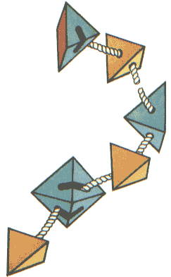 Возможности
«змейки» Генеля чрезвычайно широки (рис. 4). Одних только центральносимметричных
фигур четыре - октаэдр, усечённый октаэдр, треснувший куб и странная фигура с
пирамидальными впадинами (назовем её «мяч»). Следом идёт ряд осесимметричных
фигур - «пирамида», «шлем», «дзот», «цветок», «вазы»,
«шкатулка» и др. Среди них попадаются интересные «архитектурные формы», такие,
как «дом», «шалаш». Чем ниже уровень симметрии, тем больше разнообразие, причём
можно проиллюстрировать все виды симметрии. Например, «цветок» - лучевая
симметрия, «гусеница» - трансляционная. 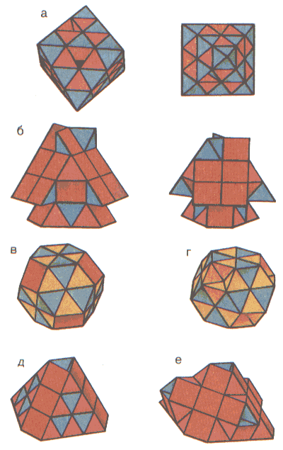 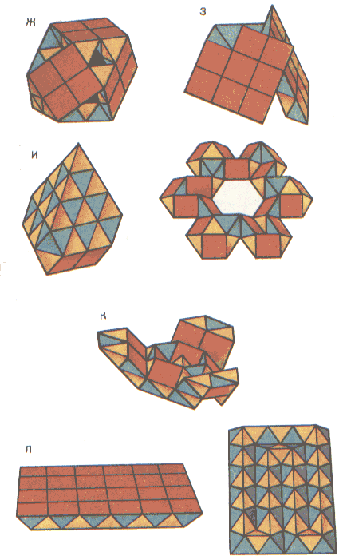 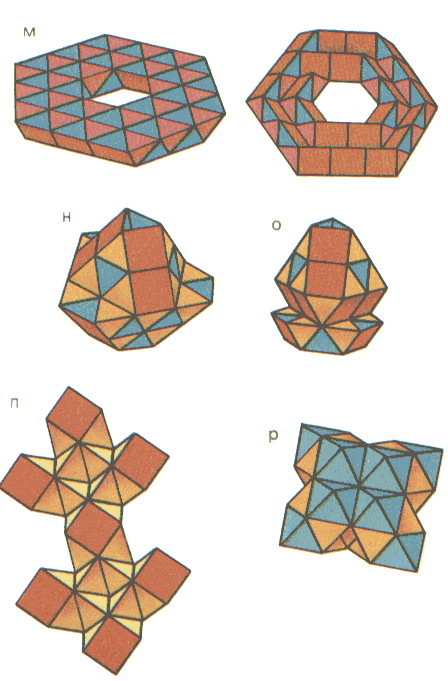 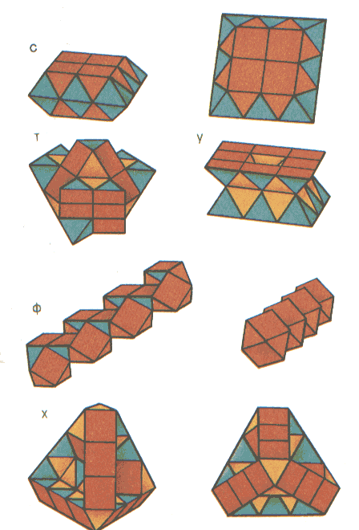 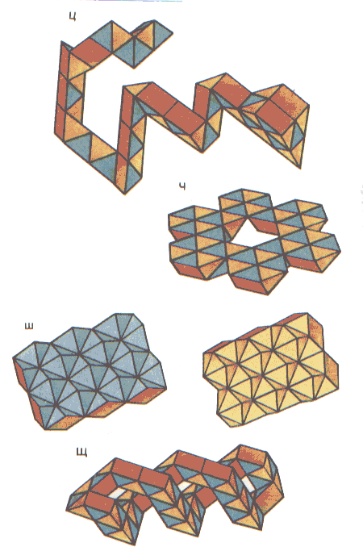 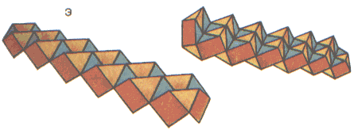 Рис. 4. Фигуры, складываемые из «змейки» Генеля: Ф – октаэдр; б – «дом»; в – усеченный октаэдр; г –
«мяч»; д – пирамида; е – «дзот»; ж – треснувший куб; з – «шалаш»; и – «шлем»; к
– цветок; л – «шоколад»; м – соты; н – «ваза 1»; о – ваза 2»; п – «дракон»; р –
кристалл; с – «шкатулка»; т – «тюльпан»; у – «большая шкатулка»; ф –
«гусеницы»; х – усеченный тетраэдр; ц– «уж»; ч – «снежинка»; ш – «щетка»; щ –
«пружина»; э – винт. Самое важное то, что у нашей «змейки» сохранилось общее
достоинство всех «змей» - полинаправленность игры, наличие несчётного количества состояний,
достижение которых является целью в игре с головоломкой. Можно попытаться
сложить известную фигуру, можно искать что-то своё. При этом существуют
различные уровни сложности. Самый простой - плоские структуры, например
«шоколад» или «соты». Наиболее сложные - высокосимметричные фигуры,
допускающие единственное решение, такие, как октаэдр. Существует и архипростой,
нулевой уровень сложности - контурные фигуры. Наша «змейка» позволяет сложить
ряд контурных многоугольников - треугольник, квадрат, прямоугольник,
параллелограмм, ромб, шестиугольник, целую вереницу «звёзд». Симметрии форм «...Значений у слова «симметрия» существует
множество... В математике слово «симметрия» имеет не меньше семи значений
(среди них симметричные полиномы, симметричные матрицы). В логике существуют
симметрические отношения. Важную роль играет симметрия в кристаллографии... Интересно интерпретируется понятие симметрии в биологии. Там описываются шесть различных
видов симметрии. Мы узнаём, например, что гребневики дисимметричны, а цветки
львиного зева отличаются билатеральной симметрией. Мы обнаружим, что симметрия
существует в музыке и в хореографии (в танце). Она зависит от
чередования тактов. Оказывается, многие народные танцы и песни построены
симметрично» (Вернер Гильде. «Зеркальный мир»). Такое
разнообразие толкований понятия «симметрия» требует уточнения,
о какой именно симметрии идет речь. Мы понимаем под симметрией наличие у
предмета возможности самосовмещаться при определенных преобразованиях.
Преобразования включают в себя операции симметрии. Основных операций симметрии
три - зеркальное отражение, поворот (вокруг
оси или точки) и сдвиг (другими
словами, перенос или трансляция). С некоторыми оговорками к операциям симметрии
можно отнести пропорциональное
увеличение (уменьшение). Зеркальную симметрию, думается, комментировать не надо.
Радиальная, или лучевая, симметрия означает, что фигура может быть
самосовмещена при повороте вокруг некоторой оси. Трансляционной симметрией
обладают, например, периодические паркеты (то есть наборы плоских
многоугольников, которыми без просветов можно покрыть бесконечную плоскость),
самосовмещающиеся при параллельном переносе на определенное расстояние. Абсолютно симметричными можно считать только бесконечные паркеты
- при любом их ограничении пограничные элементы при переносе вылезут за край. С
этой точки зрения трансляционная симметрия фигуры «гусеница» (рис. 4) тоже
приближенна, что на практике вполне допустимо. Еще более приближенной является
симметрия «сот». В идеальном случае спиральная симметрия предполагает
самосовмещение при повороте с одновременным изменением размера. В таком виде
это преобразование к «сотам» неприменимо, но спираль все же явно видна. Будем
считать «соты» наброском спиральной симметрии.л Еще один интересный тип симметрии - винтовую - демонстрируют фигуры «винт» и «пружина». К ним
применимы операции трансляции с одновременным поворотом. Винтовая симметрия
не допускает наличия у фигуры зеркальных плоскостей, но иногда разрешает
операцию поворота без трансляции. Эти фигуры самосовмещаются при повороте на
180°, поскольку имеют по два симметричных витка. Одновитковый «винт»
(попробуйте сложить его сами) обладает исключительно винтовой симметрией.
Возможно, вам удастся сложить и треёвитковый «винт». При наличии центральной симметрии каждой точке фигуры
соответствует точка на прямой, проходящей через центр симметрии, которая
отстоит от него на том же расстоянии, что и исходная. Идеальные
центральносимметричные фигуры найдены всего две: усеченный октаэдр и «мяч». Эти
фигуры - «чемпионы» симметричности, они относятся к группе симметрии куба и
допускают 48 преобразований симметрии. Треснувший куб и октаэдр менее
симметричны (картину искажают впадины), но так или иначе эти фигуры венчают
воображаемую пирамиду симметрии нашей «змейки». Под уровнем симметрии будем понимать количество
допустимых для данной фигуры операций симметрии. Не всегда сложить более
симметричную фигуру сложнее, чем менее симметричную. Так, например, «дом» допускает практически единственное решение в
отличие от «шлема», собрать который гораздо легче. А ведь «шлем» кроме оси
симметрии имеет ещё и три зеркальные плоскости, которых «дом» лишён из-за
косых выступов на «крыше». Поэтому «дом» в пирамиде симметрии стоит на более
низком уровне. Другими словами, уровень симметричности и степень сложности
фигуры жестко не связаны. С уверенностью можно сказать одно: чем ближе к
вершине нашей воображаемой пирамиды, тем меньше фигур. А количество фигур в её
основании практически необозримо. Несомненно, поиск в областях, близлежащих к
вершине, наиболее интересен. Фейерверк задач При игре со «змейкой» можно ставить специальные задачи. Например,
найти структуру наименьшего объема или наименьшей поверхности. Из фигур,
которые удалось найти автору, этими свойствами обладает «шкатулка». Можно
решать обратную задачу: найти фигуру максимального объема или максимальной поверхности
без отверстий. Еще задача: можно ли полностью упрятать внутрь какой-либо тип граней?
Последняя задача наиболее интересна при трёхцветной раскраске «змейки»
(тетраэдры - светлые, треугольные грани полуоктаэдров — темные, квадратные
основания - любого третьего цвета). При её решении один из цветов исчезает.
Автору удалось полностью «уничтожить» только квадраты (например, в «мяче» или в
«кристалле»). Если вас утомили строгие геометрические формы, можете свободно
фантазировать. Лепите птиц, зверей и насекомых. Вообще говоря, игры из разряда
«змей» резко отличаются от комбинаторных головоломок типа кубика Рубика,
который уже дал изрядную статистику помешательств. Это вызвано тем, что поле
поиска решений кубика представляет собой многомерную многосвязную сеть, где-то
в глубине которой спрятано единственное верное решение. Бесконечное блуждание
по внешне одинаково бессмысленным сочетаниям цветов не способствует повышению
настроения. А «змейки» недаром называют «лекарством от стресса». Игра с ними
напоминает прогулки по лесным тропинкам, выводящим то на опушку, то на поляну,
на которых всегда обнаруживается что-то новое и интересное. Углубившись в этот
лес, не всегда сразу выйдешь на искомую фигуру, но в любой момент есть шанс
обнаружить что-то свое, не менее занимательное. Но
вернёмся, однако, из воображаемого леса и посмотрим, по каким разделам
математики «проползает» наша «змейка». Устройство её - геометрическое, здесь
есть и правильные геометрические мозаики, и платоновы тела. Если же захочется
точно подсчитать число возможных состояний «змейки», то придется погрузиться в комбинаторику. Каждый тетраэдр может располагаться
на двух гранях полуоктаэдра в трёх положениях - всего 6 сочетаний. Соединений
элементов - 47, итого общее число конфигураций - б47. Это, конечно,
завышенная оценка. Чтобы найти точное число, следует исключить все случаи
самопересечений, что само по себе очень непросто. Но даже после этой трудоемкой
процедуры количество возможных положений выражается астрономическим числом.
Перебирать их все вслепую - занятие безнадежное. Можно предложить алгоритм
игры со «змейкой», распадающийся на два этапа: 1. Выбор цели. На этом этапе нужно мысленно синтезировать из
игровых модулей некую пространственную фигуру, не обращая внимания на
связность. Можно выбрать одну из предложенных структур, но значительно
интереснее создать свою. Такая возможность есть у каждого, кто взял в руки
«змейку». Первый этап потребует от игрока объёмного пространственного видения,
которое где-то сродни с художественным восприятием. 2. Выбор пути. Теперь нужно провести «змейку» через
все ячейки фигуры - нашей цели. Эта задача относится к одному из интереснейших
разделов математики - топологии, а точнее, к теории графов. Ведь если заменить игровые модули условными
точками-вершинами и соединить соседние вершины отрезками-ребрами, то получится
самый настоящий граф. Для разных фигур графы будут различной сложности. Графы
контурных многоугольников имеют предельно простой вид - это обычные цепочки.
У каждой вершины по два соседа, и задачи собственно нет - цель практически
достигнута на первом этапе. Но для компактных фигур ситуация иная, у каждого
элемента появляется по нескольку соседей, каждая вершина графа обрастает
рёбрами (их может быть до четырёх - по числу контактирующих граней одного
элемента). Граф становится многосвязным. Теперь решение второго этапа
заключается в построении так называемой гамильтоновой линии графа - то есть
линии, проходящей через все его вершины по одному разу. И вот тут-то игрок
оказывается на переднем крае математического фронта, ибо задача существования
гамильтоновой линии для произвольного графа в общем случае не решена. Можно
действовать методом простого перебора с помощью компьютера, но лучше
использовать интуицию. Решив задачу второго этапа, кроме эстетического наслаждения вы
испытаете еще одно чувство - удовлетворение от того, что вложили малую лепту в
борьбу против тепловой смерти Вселенной. Создав из хаоса возможностей строгую
структуру, вы хоть чуть-чуть, хоть локально понизили энтропию. Если
взглянуть на предлагаемый алгоритм, несколько изменив точку зрения, можно
заметить, что перед нами иллюстрация одного из видов творческого процесса
(например, литературного). На первом этапе - синтезирование некоего
многомерного объекта, на втором - последовательный обход его линейным объектом - аналогом одномерного текстового канала. Если шесть
возможных положений соседних элементов «змейки» закодировать цифрами, то
линейная последовательность из 47 цифр несёт полную информацию о конкретной
пространственной фигуре. Аналогия с творческим процессом, конечно,
иллюстративная, но можно поставить интересный теоретический вопрос: почему «змейка»
сворачивается в завершённые формы только при строго определенном количестве
элементов - 24 пары тетраэдр - полуоктаэдр? Можно попытаться найти примерное
направление поисков ответа. Число 24 не простое, простыми множителями его являются
три двойки и тройка (24 = Зх23). Обратите внимание: двойка
символизирует зеркальную симметрию - прямое и обратное изображения, чёт-нечет.
А три - размерность пространства, количество отпущенных нам измерений. Следует упомянуть и об укороченном, «детском», варианте исполнения
игрушки - 8 пар тетраэдр - полуоктаэдр (рис.5). Детская «змейка» гораздо проще,
освоить её легче, но при этом приходится расплачиваться разнообразием фигур.
Те, кому даже полная «змейка» покажется слишком простой, могут заняться агрегированием
нескольких «змеек». На рис.6 приведены фигуры, каждая из которых складывается
из двух «змеек». Легко заметить, что кубооктаэдр - это заполненный треснувший
куб, а «дзот» - урезанный вариант «большого ежа». В нашем пространстве существует большое количество
мозаик. Почему же из их богатой палитры человеку всего привычнее сухая
кубическая мозаика с её унылой ортогональностью? Да потому, что мы живём в гравитационном
мире и привыкли к вертикалям и горизонталям. Поэтому и стол, и кирпич, и дом -
всего лишь трансформированные кубы. Нам нужны горизонтали, чтобы по ним ничего
не катилось и не падало. Только крыши, которые как раз и должны сбрасывать
воду, оживляют пейзаж. Глазу необходимы такие нарушения. А может, где-то
царствует иное геометрическое устройство? Где-нибудь, где нет силы тяжести? Попробуем
бросить взгляд в микромир. 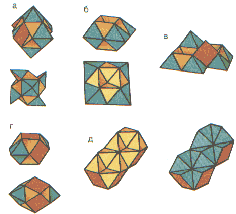 Рис. 5. Детская «змейка»: а – «пропеллер», б – «шкатулочка», в – «грифон», г –
«торпеда», д – «ёжик». 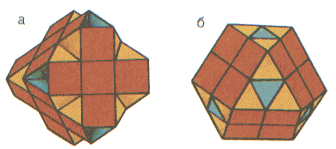 Рис. 6. Фигуры, складываемые из двух «змеек»: а – «большой ёж», б – кубоактаэдр. В
начале нашего века родилась идея изображать молекулярные структуры не шарами,
имитирующими атомы, а многогранниками,
получаемыми при соединении прямыми линиями центров атомов. Структуру любого
кристалла можно моделировать, плотно укладывая друг к другу многогранники,
называемые координационными полиэдрами. Оказалось, что наиболее распространенными
в кристаллических структурах полиэдрами являются именно тетраэдры и октаэдры. В малых масштабах, где не господствует сила
тяжести, они оказываются наиболее энергетически выгодными. Если вообразить, что
в вершинах элементов нашей «змейки» находятся атомы, то обнаружится, что мы
держим в руках модель структуры золота, серебра, никеля, меди, алюминия,
свинца, их смесей и целого ряда интерметаллических соединений. Вот в какие дали
заползла «змейка»! От архитектурных форм до молекулярных
структур, от кристаллографии до метрики Пространства. Ведь «змейка» - это
воплощенная Геометрия. В ней нет никакого тайного устройства, никакого
скрытого механизма. Все её устройство - снаружи, в геометрии её частей. А
Геометрия - везде, Геометрия пронизывает весь наш мир - от элементарных
частиц до надгалактических структур. Как сделать «змейку» Генеля
На рис.3 приведено схематическое устройство «змейки».
Способ соединения может быть любым. Автор использовал наиболее простой, но
вполне надёжный способ - с применением сквозной гибкой связи, а попросту
говоря, шляпной резинки. Детали «змейки» никак не соотносятся с прямоугольными
параллелепипедами, поэтому делать их из брусков механической обработкой
крайне нерационально. Наилучшим способом будет отливка из эпоксидной смолы.
Формы можно изготовить из ламинированного картона - очень хорошо подходят для
этой цели пакеты из-под молока. Вырежьте развертки форм по контуру (рис. 7 и 8)
и сложите их, перегнув по сплошным линиям к себе, а по пунктирным - от себя. 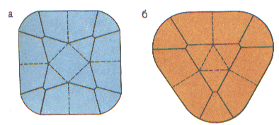 Рис.7. Разметки форм для отливки деталей «змейки»: а – развёртка формы полуоктаэдра; б – развёртка формы
тетраэдра. 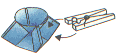 Рис. 8. Форма для отливки полуоктаэдра в сборе. 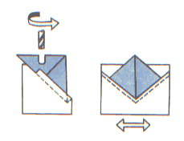 Рис. 9. Фрезирование пазов полуоктаэдра с помощью
кондуктора. 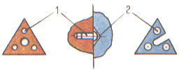 Рис. 10. Система фиксации: 1 – заклёпки с круглой шляпкой; 2 – конические
углубления Красить по поверхности изделия из эпоксидной смолы
нецелесообразно, проще окрасить их в объёме, добавив порошок красителя при
смешении компонентов. Наилучший эффект дает окраска тетраэдров в светлые тона,
а полуоктаэдров - в тёмные. Для одной «змейки» их понадобится по 24 штуки. В каждом тетраэдре просверлите по два отверстия в центрах граней,
соединяющиеся в его геометрическом центре. С полуоктаэдрами сложнее. В них
нужно просверлить по четыре отверстия в центрах треугольных граней, которые
должны выйти в центр квадратного основания. Затем соедините отверстия попарно
пазами, выбрав между ними весь материал. Проще всего сделать это фрезерованием
на кондукторе (рис. 9). В крайнем случае, если нет возможности выполнить
операции фрезерования, пазы вырежьте лобзиком. Нетрудно заметить, что уже при
сверлении в центре квадратного основания появляется отверстие неправильной
формы. Это отверстие позволяет продеть насквозь пилку лобзика и облегчает в
дальнейшем протягивание резинки, но ухудшает внешний вид. После сборки
основания полуоктаэдров закройте квадратами из липкой ленты, как это сделано в
кубике Рубика. Тем самым достигаются две цели: маскируются технологические
отверстия и реализуется трехцветная раскраска «змейки». Чтобы цепочка элементов держала форму, надо предусмотреть
систему фиксации. Один из возможных вариантов исполнения фиксаторов приведен
на рис. 10. Источник: КАЛЕЙДОСКОП ИГР, 1990. Составитель В. Белов. === === |
|
|
|